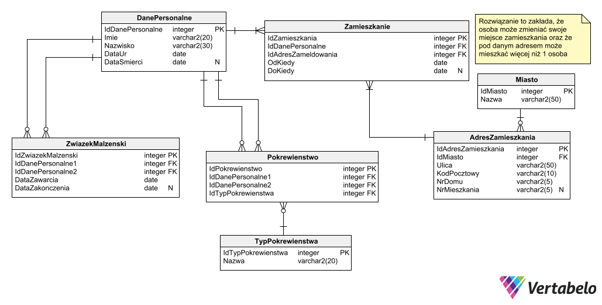
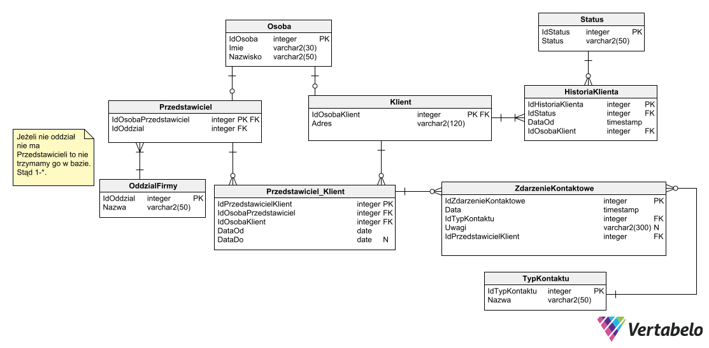
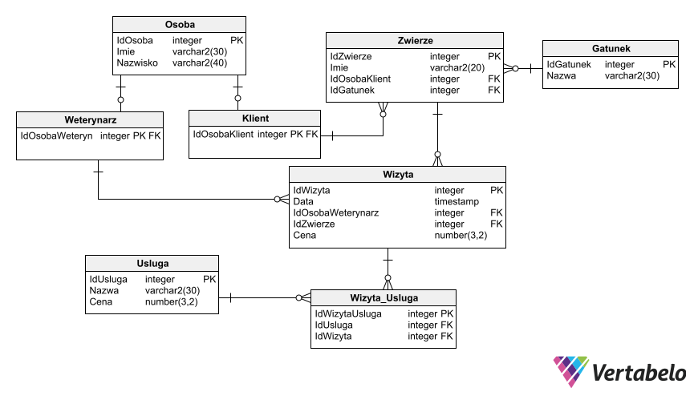
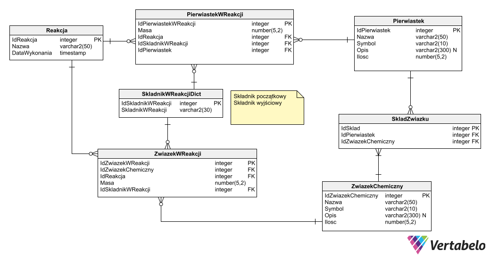
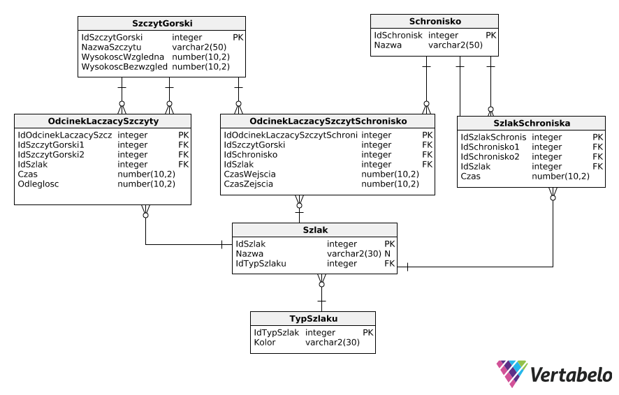

Zaproponuj schemat bazy danych dla USC, w której będą przechowywane podstawowe dane o obywatelach: • Dane personalne, • Informacje o pokrewieństwie, • Informacje o miejscu zamieszkania (musi być możliwość podziału obywateli ze względu na miasto, w którym mieszkają), • Informacje o małżeństwach, • Każdy obywatel może zawrzeć wiele związków małżeńskich, • W bazie danych powinny być przechowywane informacje o osobach zmarłych.  Zadanie 2: Ewidencja klientów
Firma potrzebuje bazy danych służącej do ewidencji klientów (imię, nazwisko, adres). Każdy klient jest obsługiwany, w danym momencie, przez jednego przedstawiciela (imię, nazwisko), przedstawiciel może obsługiwać wielu klientów. Przedstawiciele na przestrzeni lat mogą się zmieniać. Chcemy przechowywać informację dotyczące historii przedstawicieli danego klienta. Każdy przedstawiciel należy do jednego z wielu oddziałów firmy. Każdy klient ma określony status (np. aktywny klient, dawny klient, potencjalny itp.). W bazie musimy przechowywać również informacje o kontaktach z klientem. Musimy pamiętać datę kontaktu, opis i typ kontaktu. Typem może być np. e-mail, telefon, fax itp. Kontakt może nawiązać tylko i wyłącznie przedstawiciel przypisany do klienta.  Zadanie 3: Klinika weterynaryjna
Klinika weterynaryjna potrzebuje bazy danych rejestrującej klientów, ich zwierzęta, wizyty, usługi (według kategorii) oraz weterynarzy przyjmujących wizyty. Jeden klient może mieć kilka zwierząt. Wizyta dotyczy jednego zwierzęcia, jednego weterynarza oraz jednej lub więcej usług.  Zadanie 4: Konferencje
Zaprojektuj diagram związków encji dla firmy, która zajmuje się organizacją konferencji. Firma chce przechowywać dane dotyczące klientów (firm), dane osób wraz z ich przynależnością do firmy (załóżmy, że osoba pracuje w jednej firmie), dane dotyczące organizowanych konferencji (data, temat). Zakładamy, że konferencję organizuje jedna firma. Musimy przechowywać również informacje o prelegentach (osobach z firmy) – na każdej konferencji jest wielu prelegentów. Dla każdego prelegenta musimy pamiętać tytuł odczytu.
 Zadanie 5: Reakcje chemiczne
Zadanie 5: Reakcje chemiczne Twoim zadaniem jest zaproponowanie diagramu związków encji dla bazy danych, która służy do opisywania reakcji chemicznych. Wymagane elementy bazy to: Tabela przedstawiająca dostępne w laboratorium chemicznym pierwiastki. Każdy pierwiastek powinien mieć określoną nazwę, symbol, opis właściwości oraz ilość (masę) dostępną w laboratorium. Tabela opisująca związki chemiczne. Dla każdego związku powinny być dostarczone informacje takie jak nazwa, symbol chemiczny oraz opis i ilość dostępna w laboratorium. Dodatkowo, każda reakcja chemiczna przeprowadzona w laboratorium powinna być opisana w bazie. Opis powinien zawierać nazwę reakcji, składniki początkowe (czyli użyte pierwiastki lub związki chemiczne) wraz z ich ilościami (masami), produkty powstałe w wyniku reakcji oraz datę wykonania tej reakcji. W reakcji może uczestniczyć zarówno jeden, jak i wiele pierwiastków lub związków chemicznych.  Zadanie 6: Szlaki
Zaproponować diagram związków encji bazy danych dotyczących wycieczek górskich. Mamy przechowywać informację o szczytach górskich (ich nazwie, wysokości względnej i bezwzględnej), o schroniskach i szlakach je łączących. Chcemy wiedzieć jaki kolor ma szlak i jaki jest czas wejścia i zejścia tym szlakiem. Baza danych musi dawać odpowiedź na pytanie ile czasu będzie trwała wycieczka z danego schroniska na dany szczyt, ewentualnie przez inne schronisko i inny szczyt; powrót ewentualnie do innego schroniska. 